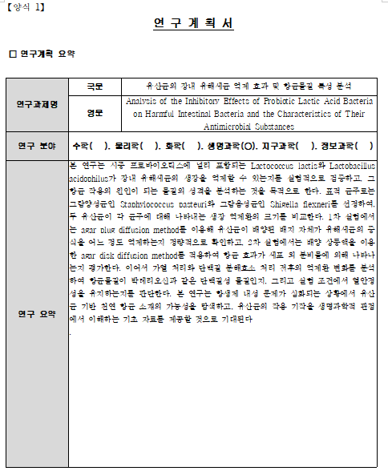

ChatGPT가 jakal-hwpx를 직접 설치하고, 문서를 채우고, 검증까지 완료합니다.
코딩 지식 없어도 됩니다. ChatGPT가 알아서 합니다.
PDF 보고서를 참고해서 빈 양식을 자동으로 채운 결과입니다.
| 연구과제명 | 국문 | ( 작성 필요 ) |
| 영문 | ( 작성 필요 ) | |
| 연구 분야 | 수학( ), 물리학( ), 화학( ), 생명과학( ), ... | |
| 연구 요약 | ( 내용 작성 ) | |
| 연구과제명 | 국문 | 유산균의 장내 유해세균 억제 효과 및 항균물질 특성 분석 |
| 영문 | Analysis of the Inhibitory Effects of Probiotic Lactic Acid Bacteria on Harmful Intestinal Bacteria and the Characteristics of Their Antimicrobial Substances | |
| 연구 분야 | 수학( ), 물리학( ), 화학( ), 생명과학(O), 지구과학( ) | |
| 연구 요약 |
본 연구는 시중 프로바이오틱스에 포함되는 Lactococcus lactis와 Lactobacillus acidophilus가 장내 유해세균의 생장을 억제할 수 있는지를 실험적으로 검증하고, 그 항균 작용의 원인 물질을 분석하는 것을 목적으로 한다. 표적 균주로는 Staphylococcus pasteuri와 Shigella flexneri를 선정하여, agar plug/disk diffusion method로 억제 효과를 정량 비교한다... |
|

단순 텍스트 치환부터 복잡한 문서 구조 편집까지.
직접 코드로 사용하는 개발자를 위한 섹션입니다.
pip install jakal-hwpx
from jakal_hwpx import HwpxDocument doc = HwpxDocument.open("양식.hwpx") doc.replace_text("{{제목}}", "연구 제목") t = doc.tables()[0] t.set_cell_text(0, 2, "유산균 항균 연구") doc.save("완성.hwpx", validate=True)